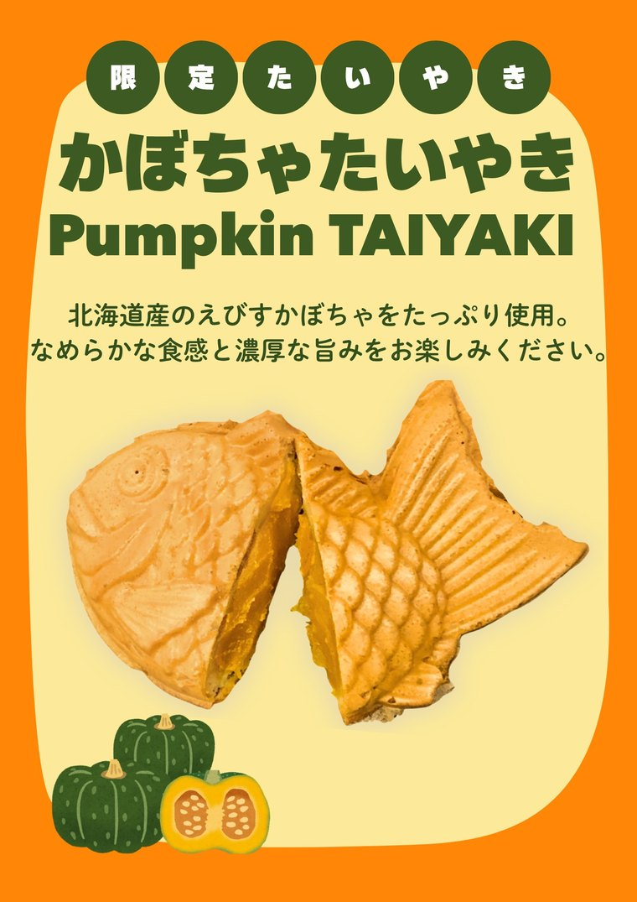
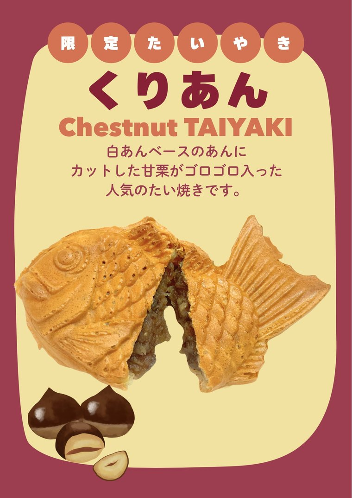
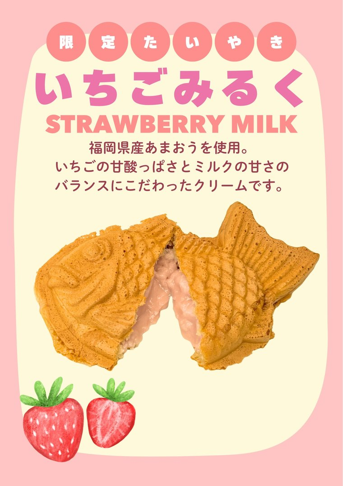
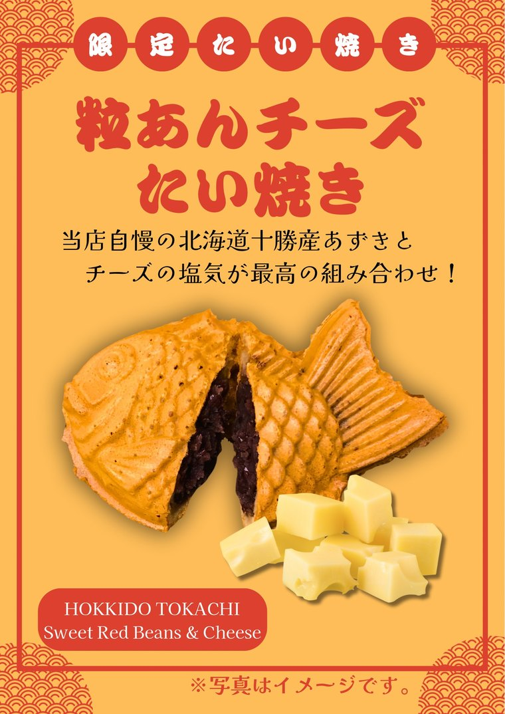
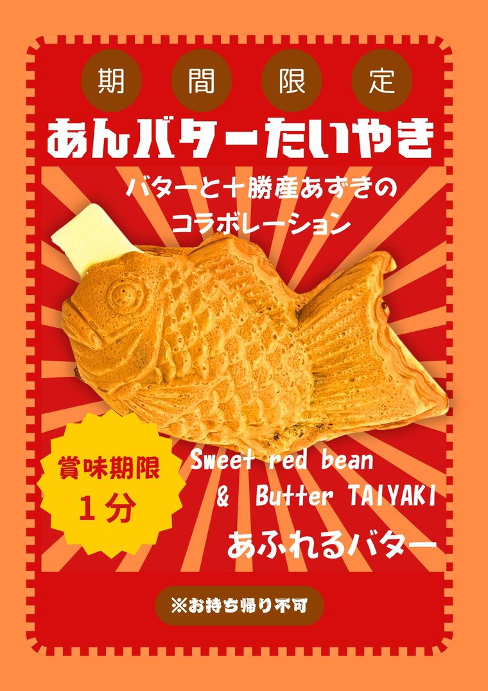

SEASONAL
限定たい焼き
-

かぼちゃたいやき
北海道産のえびすかぼちゃをたっぷり使用。なめらかな食感と濃厚な旨みをお楽しみください。
-

やきいも
焼きいもペーストをたっぷり使用。ホクホクとしたさつまいもの食感と焼きいも独特の香りや旨みをお楽しみください。
-

くりあん
白あんベースのあんにカットした甘栗がゴロゴロ入った人気のたい焼きです。
-

いちごみるく
福岡県産あまおうを使用。いちごの甘酸っぱさとミルクの甘さのバランスにこだわったクリームです。
-

粒あんチーズたい焼き
当店自慢の北海道十勝産あずきとチーズの塩気が最高の組み合わせ！
-

あんバターたいやき
バターと十勝産あずきのコラボレーション。賞味期限1分。お持ち帰りはできません。
店頭に貼っているポップを、そのまま掲載しています。限定たい焼きは季節によって変わります。